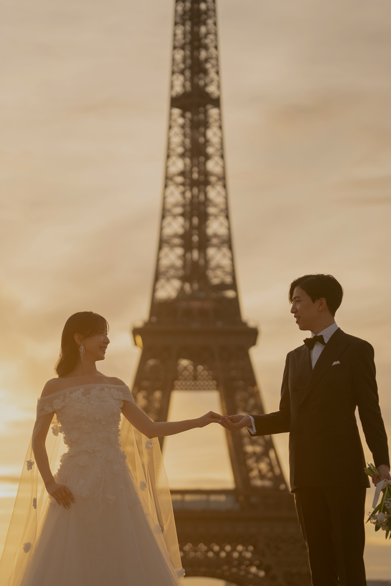
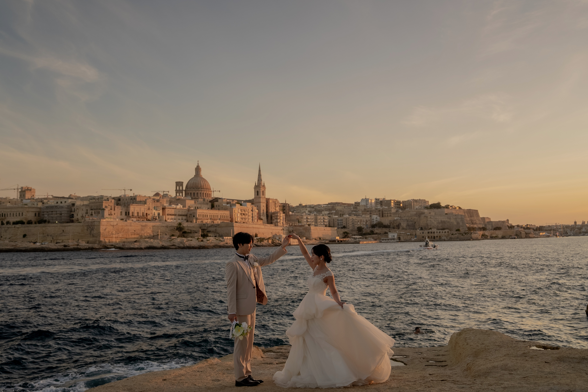
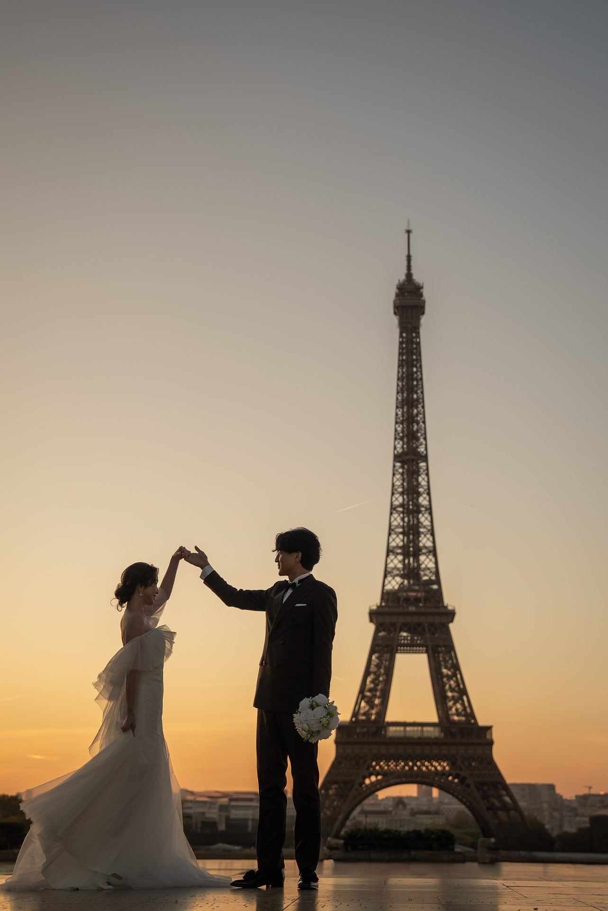
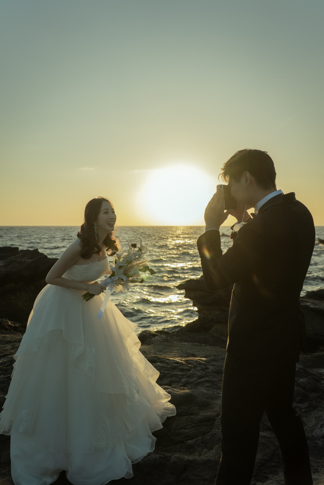
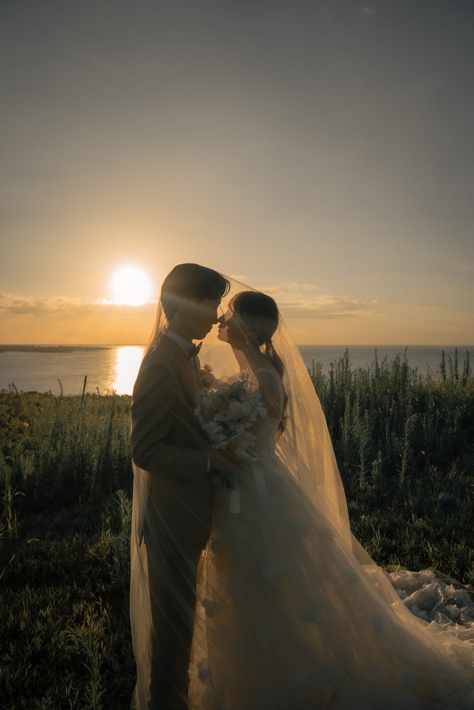
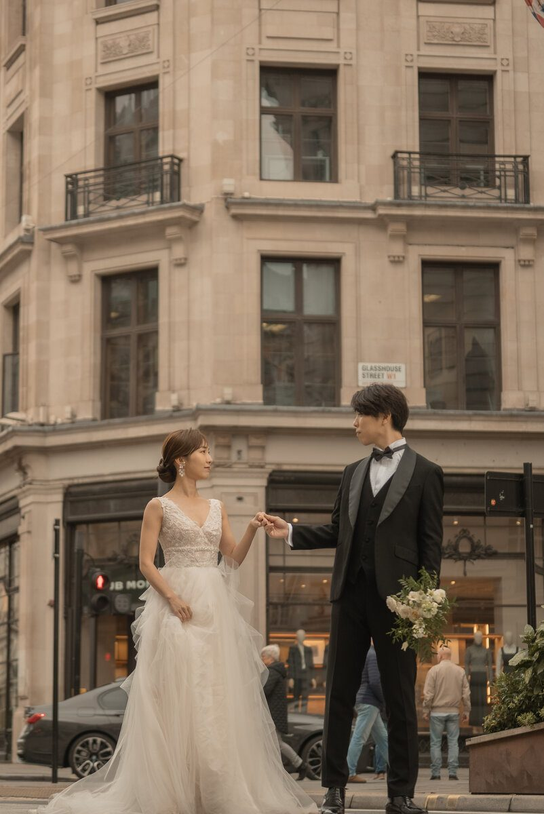

Scroll

Weaving each moment into the future
one frame, one second at a time
A brand delivering works that become
a gentle staff for your life
写真も映像も、ふたりだけのもの。
浮雲 ── ukigumo films は、
写真と映像をひとつのチームで届ける
ウェディングフィルムブランドです。
日本全国、そして世界へ。
その作品が時間と距離を飛び越えて、
あなたの人生を支える"杖"のような
存在となりますように。
ふたりの物語を、一枚、一秒に。
Light and memory,
captured in motion.
Photo and cinema — delivered as one.
From Japan to the world, beyond time.
A gentle staff for your journey ahead.
Your story — every frame,
every second.
— ukigumo ryo


04








Gallery
Gallery →厳選したドレスショップをご紹介いたします。
撮影にふさわしいスタイリングをご提案します。



撮影に関するよくあるご質問をまとめております。
view questions